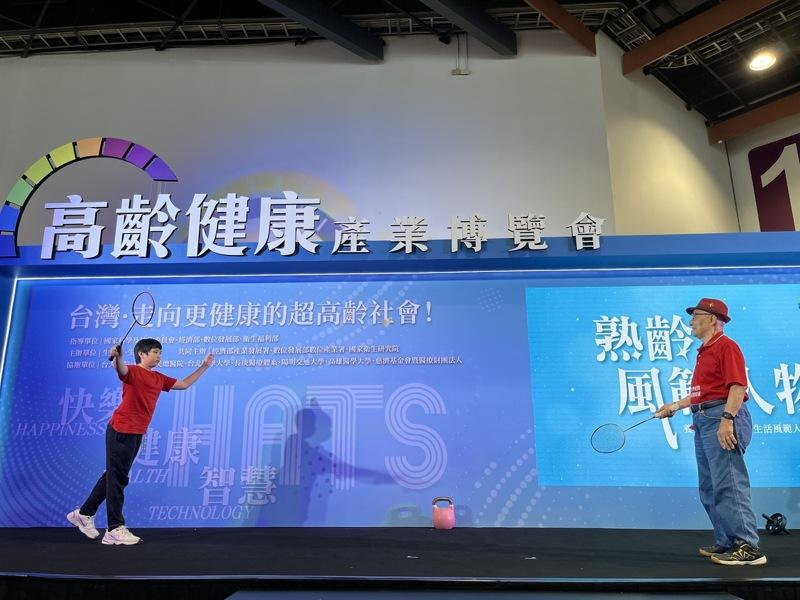
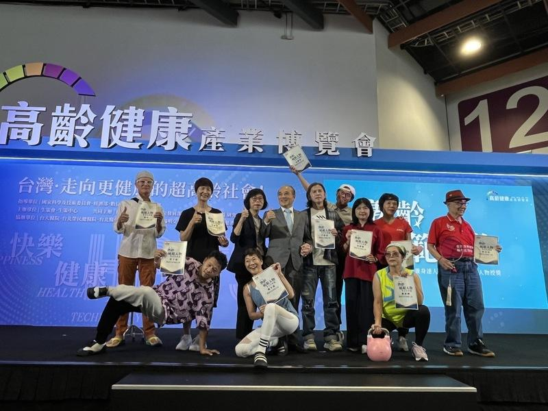

台湾黄金男双「麟洋配」打进2024巴黎奥运冠军赛，103岁世界最年长羽球员林友茂透露，自己也曾和李洋搭档过，赢过王齐麟。林已是百岁人瑞，身材仍健壮，令人赞叹，到底是怎么办到的？
目前是金氏世界纪录「全球最年长羽球选手」保持人的林友茂，热爱运动，曾经担任过太极拳教练，年轻时学过篮球、跳高。50岁时，接触羽球，迄今仍勤练，连续多年参加台湾清晨杯羽球赛，获得40届冠军，更与李洋、王齐麟交手过。 !function(v,t,o){var a=t.createElement("script");a.src="https://ad.vidverto.io/vidverto/js/aries/v1/invocation.js",a.setAttribute("fetchpriority","high");var r=v.top;r.document.head.appendChild(a),v.self!==v.top&&(v.frameElement.style.cssText="width:0px!important;height:0px!important;"),r.aries=r.aries||{},r.aries.v1=r.aries.v1||{commands:};var c=r.aries.v1;c.commands.push((function(){var d=document.getElementById("_vidverto-bc0de73c10937be205a8d57fd75a9690");d.setAttribute("id",(d.getAttribute("id")+(new Date()).getTime()));var t=v.frameElement||d;c.mount("10171",t,{width:720,height:405})}))}(window,document);
在第一届「高龄健康产业博览会」举办的「熟龄风范」票选活动中，林友茂荣获熟龄风范人物，他分享健康长寿的秘诀，包括保持心情愉快、多吃原型食物、乐于助人等。目前仍维持每周三天的打球频率，多年的运动习惯有助于保持身心健康，对高龄者来说，更可以增加肌力、预防骨松。
以健康、智能、快乐为主轴的高龄健康产业博览会，特别举办了「熟龄风范」票选活动，吸引从50岁到103岁的熟龄长辈，分享自己健康生活、智能生活、快乐生活的秘诀。首届活动选出了30位熟龄风范人物，分享养生秘诀，共通之处都是「运动」，养成平日规律的好习惯能远离疾病。
国健署副署长贾淑丽提到，截至今年6月底，台湾高龄人口已超过439万人；其中，超过8成的人至少患有一种慢性病。 台湾即将迈入超高龄社会，从这数字看来，老化会导致身体功能逐渐衰退，及早预防除了从生活作息做起，更要创建运动的习惯。
今年上榜的熟龄风范人物，除了精力充沛的林友茂，还有58岁接触瑜伽、陆续拿到多张师资证照的「不老瑜珈阿伽」陈冬莲，肢体灵活度完全不输流行天后，她表示，年长者保养好自己，有机会继续实现人生梦想，在人生舞台上发光发热。
另一位乐龄运动健身教练萧素卿，今年已经65岁，是嘉义社区据点的银发教师，她要以行动来证明「运动是最好的良药」，将会参加银发族运动会举重项目。她表示，年龄只是数字，而不是限制，立志还要参赛许多健身项目，分享运动的好处。

103岁羽球好手林友茂与曾孙现场示范对打，展现灵活的身体。（记者廖静清／摄影）
台湾黄金男双「麟洋配」打进2024巴黎奥运冠军赛，103岁世界最年长羽球员林友茂透露，自己也曾和李洋搭档过，赢过王齐麟。林已是百岁人瑞，身材仍健壮，令人赞叹，到底是怎么办到的？
目前是金氏世界纪录「全球最年长羽球选手」保持人的林友茂，热爱运动，曾经担任过太极拳教练，年轻时学过篮球、跳高。50岁时，接触羽球，迄今仍勤练，连续多年参加台湾清晨杯羽球赛，获得40届冠军，更与李洋、王齐麟交手过。
在第一届「高龄健康产业博览会」举办的「熟龄风范」票选活动中，林友茂荣获熟龄风范人物，他分享健康长寿的秘诀，包括保持心情愉快、多吃原型食物、乐于助人等。目前仍维持每周三天的打球频率，多年的运动习惯有助于保持身心健康，对高龄者来说，更可以增加肌力、预防骨松。
以健康、智能、快乐为主轴的高龄健康产业博览会，特别举办了「熟龄风范」票选活动，吸引从50岁到103岁的熟龄长辈，分享自己健康生活、智能生活、快乐生活的秘诀。首届活动选出了30位熟龄风范人物，分享养生秘诀，共通之处都是「运动」，养成平日规律的好习惯能远离疾病。
国健署副署长贾淑丽提到，截至今年6月底，台湾高龄人口已超过439万人；其中，超过8成的人至少患有一种慢性病。 台湾即将迈入超高龄社会，从这数字看来，老化会导致身体功能逐渐衰退，及早预防除了从生活作息做起，更要创建运动的习惯。
今年上榜的熟龄风范人物，除了精力充沛的林友茂，还有58岁接触瑜伽、陆续拿到多张师资证照的「不老瑜珈阿伽」陈冬莲，肢体灵活度完全不输流行天后，她表示，年长者保养好自己，有机会继续实现人生梦想，在人生舞台上发光发热。
另一位乐龄运动健身教练萧素卿，今年已经65岁，是嘉义社区据点的银发教师，她要以行动来证明「运动是最好的良药」，将会参加银发族运动会举重项目。她表示，年龄只是数字，而不是限制，立志还要参赛许多健身项目，分享运动的好处。

第一届「高龄健康产业博览会」举办的「熟龄风范」票选活动，选出健康生活、智能生活、快乐生活的熟龄风范人物。（记者廖静清／摄影）